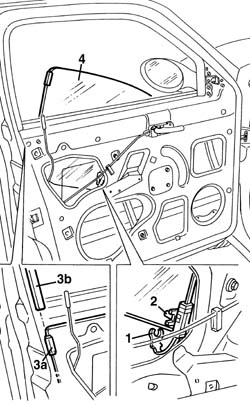

7005D14 front side door descending window glass - r r with door panel (and mount frame) removed
- Path
- Procedures > 70 FITTINGS > 7005 PASSENGER COMPARTMENT FRONT SIDE DOORS > 7005D front side door window glasses > 7005D14 front side door descending window glass - r r with door panel (and mount frame) removed
- Kind
- repair procedure (removal / refitting; the operation number is the code)
- Applies to
- all engines; all production periods
- Interactive page
- https://sloeber94.github.io/elrnDB-a156/en/#/3238588
Applies to: all engines; all production periods
 Removing
Removing
 Refitting
Refitting7005A04 front side door water guard protection - r r or replace with door panel removed
7005D30 front side descending window glass scraper (inner) r r
7005D24 front door window rear guide - r r
1. Open the window about 1/3 of the way, then disconnect the window safety retainer.
2. Open the window about 2/3 of the way, then disconnect it from the drive pin.
3. Release the fixing element (3a) for the window from the rear rain gutter (3b), sliding the actual window downwards.
Take care not to damage the window fixing element (3a).
4. Withdraw the window glass from the door frame.

Applies to: all engines; all production periods
Refitting
RemovingCheck the condition of the window, the fixing piece, the run channel, the drive pin and the safety retainer.
Fit the window in the door frame.
Engage the window fixing piece in the rear run channel, and slide the window upwards.
Take care not to damage the window's fixing piece.
Open the window about 2/3 of the way, then connect it to the drive pin.
Open the window about 1/3 of the way, then connect the window safety retainer.
7005D24 front door window rear guide - r r
7005D30 front side descending window glass scraper (inner) r r
Check that the window works properly.
7005A04 front side door water guard protection - r r or replace with door panel removed
Topics linked from this page (3)
- 7005A04 front side door water guard protection - r r or replace with door panel removed
- 7005D24 front door window rear guide - r r
- 7005D30 front side descending window glass scraper (inner) r r